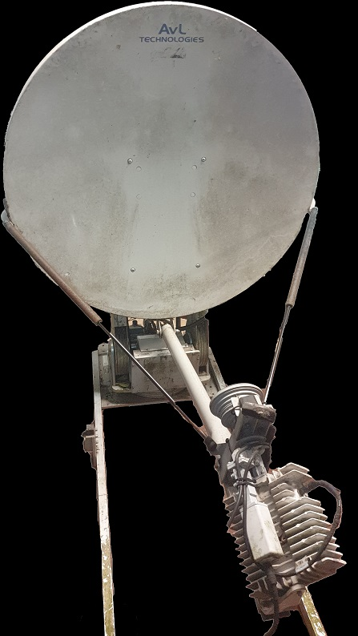
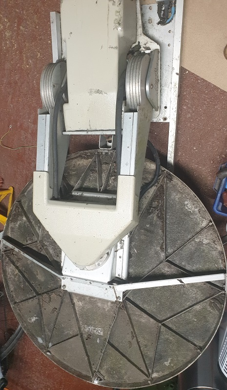
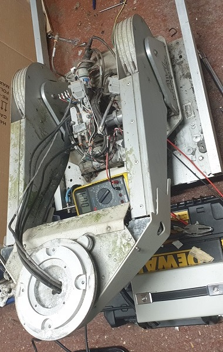
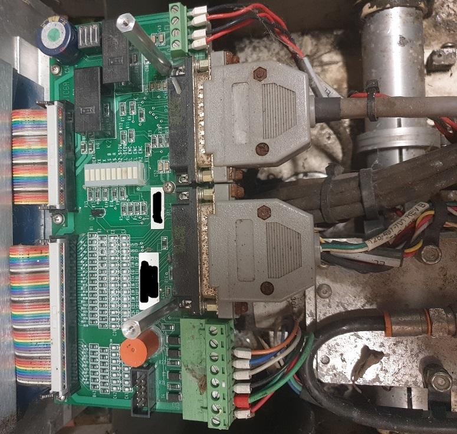
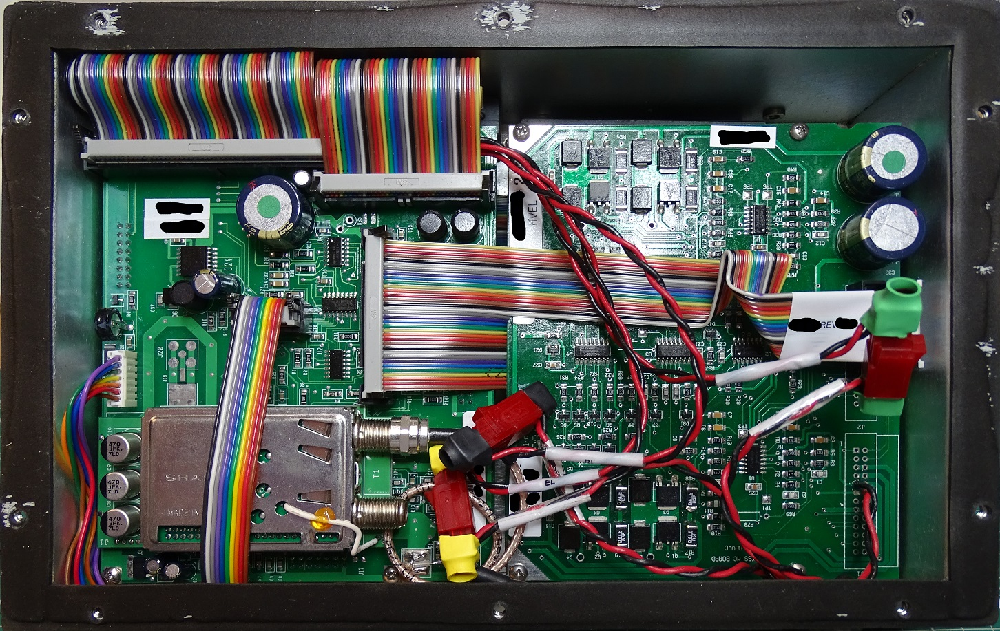
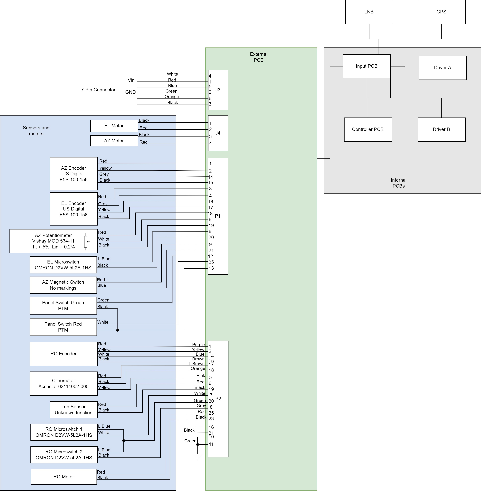
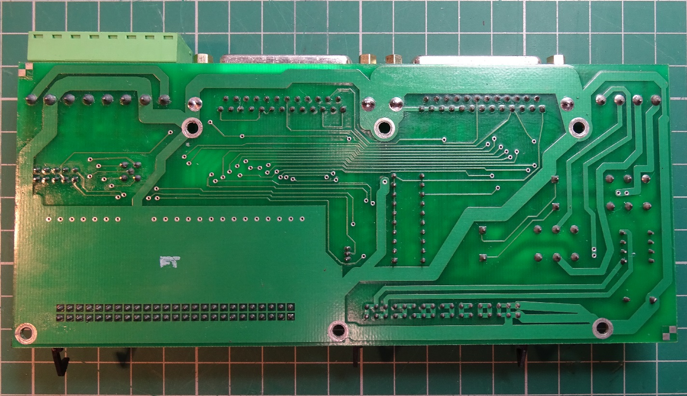
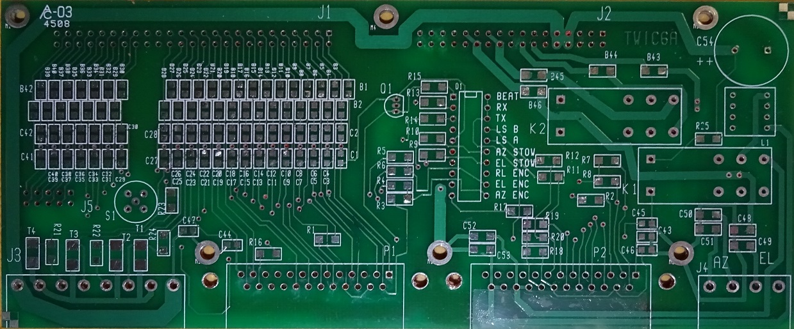
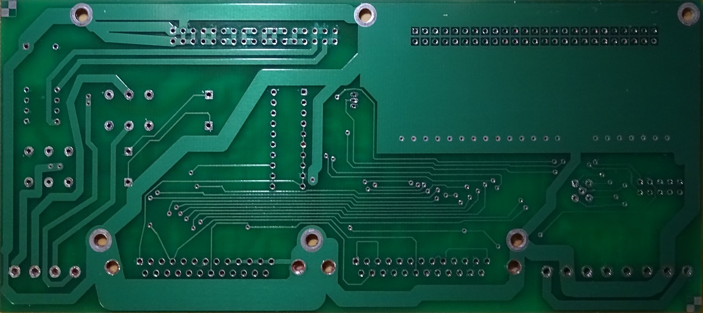

I have been quite busy with this system. The story begins when I was browsing Ebay and came across this unit for sale at a fairly reasonable price. Never one to shy away from getting a good deal, I offered a very cheek £40 offer, which was accepted by the seller. After taking my prize home, and using the mechanical cranks to test elevation, azimuth and rotation control, I was extremely happy to find that everything appeared, at the very least, safe. I was now confident in further exploring how to reuse this antenna system, primarily for the positioning ability - I was no longer interested in mearly disassembly, I wanted to re-use the system for future projects which may require the need to accurately position a (relatively) large antenna system. Figure 1 shows the fully errected antenna system, prior to me removing the dish and RF components (allowing for easier repositioning of the setup). Figure 2 shows how tight storage was.
Figure 1: Errected AVL Technologies Model 960 antenna.
Figure 2: Stowed AVL Technologies Model 960 antenna. Only just enough room to fit that 96cm dish.
The AVL Technologies Model 960 is described in their own literature as allowing "non-skilled personell" to operature Very Small Aperature Terminal (VSAT) satellite communications equipment [1]. In practice, this means it is often used for television and other high-speed satellite communications. Whilst I did not have any other ground station equipment, I was hoping it would be rather easy to determine how to use the existing hardware to control the system. I approached AVL Technologies in good faith, asking if they had any documentation they'd be able to share. Unfortunately, AVL Technologies ignored me completely. I can't say I'm surprised, but still - screw you. I only wanted to use my unit to position an antenna, now you've made me reverse engineer the whole thing.
Through examining other literature I managed to scrape from various sources [2, 3, 4], I determined the unit required a 24VDC input power supply, as well as a couple of communication lines. Maybe this is as simple as a few serial lines, but I am not that enamoured with the idea to figuring out software protocols. As a result, I made the decision to proceed with reverse engineering the hardware, dumping any firmware I come across, but with the view to implementing my own hardware for ease of future use. I do not fancy investing lots of time in reverse engineering communication protocols to find out it limits what I'd like to do with the system. By reverse engineering the existing hardware and firmware, I intend to educate myself and others on the various aspects on mechatronic design found within VSAT systems.
In order to make it easier and safer to move and reverse engineer, I elected to remove the RF components of the system. I am not wanting to use the dish for any projects in the near future, and I would probably seek to create my own RF hardware even if I were. All RF links were made using Type F connectors - an industry standard within satellite TV and cable modems, but I do not use them at all in my projects (much prefering the robustness of BNC, SMA, and N-type). This, coupled with the very tangled and hard to access nature of the RF cabling, meant I decided to simply cut out most of the RF hardware. Components will be more useful with my own RF connectors. The reduced setup is shown in a +90 degree elevation configuration in figure 3.
Figure 3: The reduced positioner setup. Note I have also removed the controller enclosure in this picture.
The natural first point of call to reverse engineer is the controller hardware - labelled Tracstar. This is a large unit, containing five PCBs, interfacing with an external control system, as well as a variety of sensors and motors on the model 960. Figure 4 shows the external connections, made on a 'external PCB', whilst figure 5 shows the internals of the enclosure as it is opened. To give credit, the unit has held up extremely well, with no signs of water or dirt ingress.
Figure 4: Connections to the external PCB. Note, not all connection points are used.
Figure 5: The first layer of PCBs within the Tracstar unit. Very clean indeed. Note, I have removed potentially identifying ID numbers.
The unit is rather complex, with a large number of switches, sensors and motors. Please consult figure 6 for a diagram of inter-PCB connections.
Figure 6: Interconnection diagram for the AVL Technologies Model 960. This diagram will be updated with more information in due course. I do not take any responsibility for anything that may happen as a result of using this information presented here or on any part of this website. Please ensure you understand your system well before relying on any information presented.
The next step is to reverse engineer the individual PCBs. There are very few identifying features or descriptions on the PCBs, as a result I have had to rely on my own interpretation and labelling scheme for parts, but I have tried to remain faithful to these devices. These PCBs must have been designed on a off-day at AVL Technologies - they are functional, but contain many examples of poor PCB design. Maybe the PCB layout was the responsibility of an intern, and they weren't checked by an experienced engineer... More to follow in that regard.
I started with reverse engineering the "external PCB". Removed from the enclosure, it is shown in figures 7 and 8.

Figure 7: Top view of the external PCB, will all components. Note, I have removed potentially identifying ID numbers.
Figure 8: Bottom view of the external PCB, will all components. Note, I have removed potentially identifying ID numbers.
The following figures, 9 and 10, show the external PCB will all components removed. Removing each component allowed me to determine values of non-marked components such as capacitors, and also allowed quick and reliable reverse engineering of the PCB. This was a useful learning experience, and the following images demonstrate the clarity to be gained from component removal. Of course, this can be risky if you do not have a sensible place to store components, as one stray sneeze can remove any hope of ever reconstructing the device.
Figure 8: Top view of the external PCB, will no components.
Figure 8: Bottom view of the external PCB, will no components.
From these clean PCBs, I constructed the circuit diagram in [5]. Please take the time to review my work, and give feedback for me to improve both schematic design and layout, as well as circuit layout logic. I must admit that most of this design was quite simple, but there is always room for improvement.
One interesting component was the xxx, a clinometer produced by xxxx. This device consists of a 5 thin metallic rods within a small sealed chamber filled with a dielectric liquid. As the device is tilted in space, a differing proportion of each leg is capacitively coupled through the dielectric as it sloshes around. By applying an AC signal, one can determine the capacitance between a give rod-pairing, and therefore deduce its tilt with remarkable accuracy. I suspect this sensor is used to determine the tilt of the antenna poisitioner mount, given the fixed position on the external PCB. I will explore how this clinometer may be used in conjunction with another (much more expensive device) in the elevation unit.
TBC...
REFERENCES
[1] Commercial flyer for the MVS960 System[2] Commercial flyer for the MVS960 System
[3] Model 960 Technical Support Training Book
[4] Model 960 Operating Instructions
[5] Model 960 External PCB Schematics